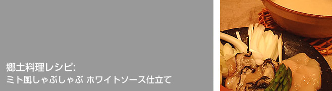

材料（２人分）
- ホワイトソースの缶詰 １缶
- バター １０グラム
- 水 １カップ
- 塩・コショウ
- ホタテ（大） ２こ
- カキ ６０グラム
- ササミ １本
- タマネギ １/４こ
- ハクサイの芯 ２枚分
- オリーブオイル 適量
手順
- 鍋にホワイトソースの缶詰をあけ、水、バターを加えあたため、良く混ぜ合わせます。なめらかになったら、塩コショウで味を整えます。
- ホタテはスライス、ササミは削ぎ切り、タマネギ・ハクサイの芯は千切りにします。
- 鍋にタマネギ・ハクサイの芯を加え柔らかくなったら、お好きな具を鍋に少しづつ加え、お好みの火の通し加減で引き上げて食べましょう。
今回の特選素材
| 商品名 | EXVオリーブオイル コッリ・エトルスキ |
|---|---|
| 生産者 | コッリ・エトルスキ農業組合 |
| 産地 | イタリア・ラツィオ州ヴィテルボ、ブレラ |
| 品種 | カニーノ：95%、フラントイオ＋レッチーノ：5% |
| 収穫 | 11月・完全手摘み |
| 搾油 | 遠心分離法(収穫後24時間以内)・フィルター |
| 酸度 | 0.20％ |
| 受賞歴 | L'EXTRAVERGINE/ UMAO 2002 最優秀オリーブ品種賞受賞 |
ポイント
知床で出会ったシェフに教えていただいたオリジナルのしゃぶしゃぶです。北海道の冷たい海が育てたホタテやカキをふんだんに使った鍋は、もう、たまりません！取り分ける器にソースを少し取り分け、オリーブオイルを加えたものにからめながら食べてください。締めはおじやが美味しいです。
今回の特選素材写真

お問合わせはこちらまで